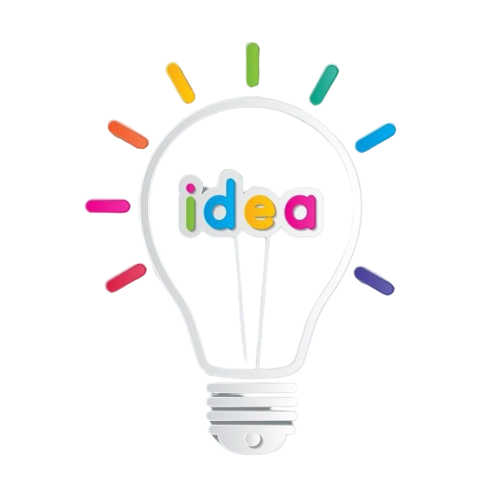
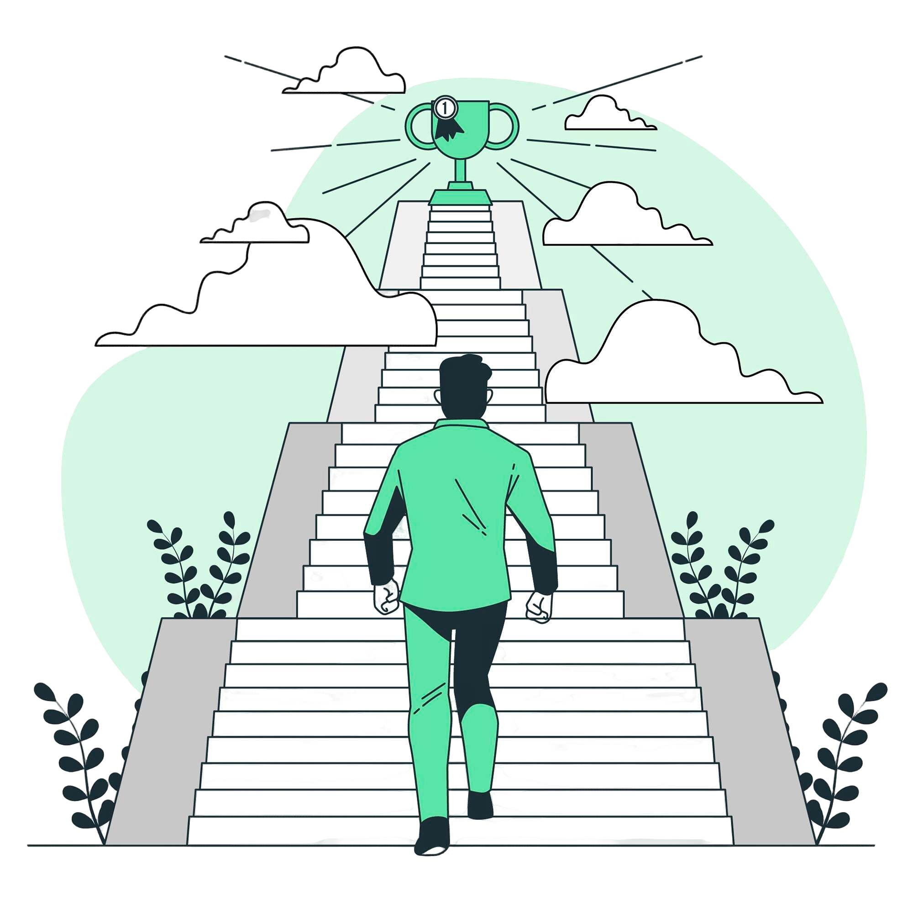

Hi, My name is Devansh
I am a
Past Works
Academic achievements
I have consistently excelled academically, scoring 95.6% in Xth and 92.75% in XIIth, with a
focus on technology and innovation. My specialization in Graphics and Gaming reflects my
dedication to learning and applying technical concepts.
Professional/Internship Experience
At Roots2Bloom, I contributed to policy-making aligned with SDGs, conducted field visits, and
performed PRAs, gaining practical experience in research, community engagement, and data
analysis.
Technical Skills and Knowledge
Proficient in Python, C, and basic Java, I am skilled with Windows and Linux systems. My
expertise lies in Graphics and Gaming, backed by strong problem-solving and analytical
abilities.

Extracurricular and Creative Pursuits
I express my creativity through Shayari, storytelling, and singing. I manage 'Faded Scribbles,'
an Instagram page showcasing my poetic work, blending artistry with communication skills.

Personal Development and Leadership
I thrive on growth and adaptability, with experiences that have strengthened my leadership, time
management, and teamwork skills, preparing me for both personal and professional challenges.